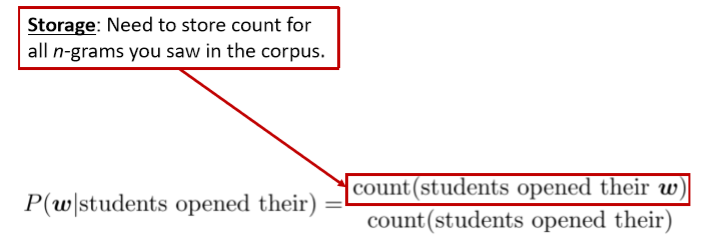
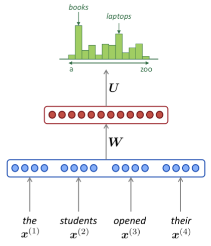

06 The probability of a sentence Recurrent Neural Networks and Language Models
Lecture 06 The probability of a sentence Recurrent Neural Networks and Language Models¶
Overview
- 介绍一个新的NLP任务
- Language Modeling (motivate RNNs)
- 介绍一个新的神经网络家族
- Recurrent Neural Networks (RNNs)
Language Modeling
- 语言建模的任务是预测下一个单词是什么。

- 更正式的说法是：给定一个单词序列 \boldsymbol{x}^{(1)}, \boldsymbol{x}^{(2)}, \ldots, \boldsymbol{x}^{(t)} ，计算下一个单词 x^{(t+1)} 的概率分布
- 其中，x^{(t+1)} 可以是词表中的任意单词 V=\left\{\boldsymbol{w}_{1}, \ldots, \boldsymbol{w}_{|V|}\right\}
- 这样做的系统称为 Language Model 语言模型
- 还可以将语言模型看作是一个将概率分配给一段文本的系统
- 例如，如果我们有一段文本 x^{(1)},\dots,x^{(T)} 则这段文本的概率(根据语言模型)为
- 语言模型提供的是 \prod_{t=1}^{T} P\left(\boldsymbol{x}^{(t)} | \boldsymbol{x}^{(t-1)}, \ldots, \boldsymbol{x}^{(1)}\right)
n-gram Language Models $$ \text{the students opened their ______} $$
- 问题 ：如何学习一个语言模型？
- 回答 (pre-DeepLearning)：学习一个 n-gram 语言模型
- 定义 ：n-gram 是 一个由n个连续单词组成的块
- unigrams: “the”, “students”, “opened”, ”their”
- bigrams: “the students”, “students opened”, “opened their”
- trigrams: “the students opened”, “students opened their”
- 4-grams: “the students opened their”
-
想法 ：收集关于不同n-gram出现频率的统计数据，并使用这些数据预测下一个单词。
-
首先，我们做一个 简化假设 ：x^{(t+1)} 只依赖于前面的n-1个单词
具体含义如下图所示

- 问题 ：如何得到n-gram和(n-1)-gram的概率？
- 回答 ：通过在一些大型文本语料库中计算它们(统计近似)
假设我们正在学习一个 4-gram 的语言模型

例如，假设在语料库中：
- “students opened their” 出现了1000次
- “students opened their books” 出现了400次
- P(\text { books } | \text { students opened their })=0.4
- “students opened their exams” 出现了100次
- P(\text { exams } | \text { students opened their })=0.1
- 我们应该忽视上下文中的“proctor”吗？
- 在本例中，上下文里出现了“proctor”，所以exams在这里的上下文中应该是比books概率更大的。
Sparsity Problems with n-gram Language Models

- 问题 ：如果“students open their w” 从未出现在数据中，那么概率值为 0
- (Partial)解决方案 ：为每个 w\in V 添加极小数 \delta 。这叫做平滑。这使得词表中的每个单词都至少有很小的概率。
- 问题 ：如果“students open their” 从未出现在数据中，那么我们将无法计算任何单词 w 的概率值
- (Partial)解决方案 ：将条件改为“open their”。这叫做后退。
Note: n 的增加使稀疏性问题变得更糟。一般情况下 n 不能大于5。
Storage Problems with n-gram Language Models

增加 n 或增加语料库都会增加模型大小
n-gram Language Models in practice
- 你可以在你的笔记本电脑上，在几秒钟内建立一个超过170万个单词库(Reuters)的简单的三元组语言模型
- Reuters 是 商业和金融新闻的数据集

稀疏性问题 ：概率分布的粒度不大。“today the company” 和 “today the bank”都是\frac{4}{26} ，都只出现过四次
Generating text with a n-gram Language Model
- 还可以使用语言模型来生成文本


使用trigram运行以上生成过程时，会得到如下文本
today the price of gold per ton , while production of shoe lasts and shoe industry , the bank intervened just after it considered and rejected an imf demand to rebuild depleted european stocks , sept 30 end primary 76 cts a share .
令人惊讶的是其具有语法但是是不连贯的。如果我们想要很好地模拟语言，我们需要同时考虑三个以上的单词。但增加 n 使模型的稀疏性问题恶化，模型尺寸增大。
How to build a neural Language Model?
- 回忆一下语言模型任务
- 输入：单词序列 \boldsymbol{x}^{(1)}, \boldsymbol{x}^{(2)}, \ldots, \boldsymbol{x}^{(t)}
- 输出：下一个单词的概率分布 P\left(\boldsymbol{x}^{(t+1)} | \boldsymbol{x}^{(t)}, \ldots, \boldsymbol{x}^{(1)}\right)
window-based neural model 在第三讲中被用于NER问题

A fixed-window neural Language Model

使用和NER问题中同样网络结构

超越 n-gram 语言模型的 改进
- 没有稀疏性问题
- 不需要观察到所有的n-grams
存在的问题
- 固定窗口太小
- 扩大窗口就需要扩大权重矩阵 W
- 窗口再大也不够用
- x^{(1)} 和 x^{(2)} 乘以完全不同的权重。输入的处理 不对称。
我们需要一个神经结构，可以处理任何长度的输入
Recurrent Neural Networks (RNN)
核心想法：重复使用 相同 的权重矩阵 W


RNN的 优点
- 可以处理 任意长度 的输入
- 步骤 t 的计算(理论上)可以使用 许多步骤前 的信息
- 模型大小不会 随着输入的增加而**增加**
- 在每个时间步上应用相同的权重，因此在处理输入时具有 对称性
RNN的 缺点
- 递归计算速度 慢
- 在实践中，很难从 **许多步骤前**返回信息
- 后面的课程中会详细介绍
Training a RNN Language Model
- 获取一个较大的文本语料库，该语料库是一个单词序列
- 输入RNN-LM；计算每个步骤 t 的输出分布
- 即预测到目前为止给定的每个单词的概率分布
- 步骤 t 上的损失函数为预测概率分布 \hat{\boldsymbol{y}}^{(t)} 与真实下一个单词 {\boldsymbol{y}}^{(t)} (x^{(t+1)} 的独热向量)之间的交叉熵
- 将其平均，得到整个培训集的 总体损失

- 然而：计算 整个语料库 \boldsymbol{x}^{(1)}, \ldots, \boldsymbol{x}^{(T)}的损失和梯度太昂贵了
- 在实践中，我们通常将 \boldsymbol{x}^{(1)}, \ldots, \boldsymbol{x}^{(T)} 看做一个 句子 或是 文档
- 回忆 ：随机梯度下降允许我们计算小块数据的损失和梯度，并进行更新。
- 计算一个句子的损失J(\theta)(实际上是一批句子)，计算梯度和更新权重。重复上述操作。
Backpropagation for RNNs

问题 ：关于 重复的 权重矩阵 W_h 的偏导数 J^{(t)}(\theta)
回答 ：重复权重的梯度是每次其出现时的梯度的总和
Multivariable Chain Rule

对于一个多变量函数 f(x,y) 和两个单变量函数 x(t) 和 y(t) ，其链式法则如下：
Backpropagation for RNNs: Proof sketch

Backpropagation for RNNs

- 问题 ： 如何计算？
- 回答 ：反向传播的时间步长 i=t,\dots,0 。累加梯度。这个算法叫做“backpropagation through time”
Generating text with a RNN Language Model
就像n-gram语言模型一样，您可以使用RNN语言模型通过 重复采样 来 生成文本 。采样输出是下一步的输入。

- 相比n-gram更流畅，语法正确，但总体上仍然很不连贯
- 食谱的例子中，生成的文本并没有记住文本的主题是什么
-
哈利波特的例子中，甚至有体现出了人物的特点，并且引号的开闭也没有出现问题
- 也许某些神经元或者隐藏状态在跟踪模型的输出是否在引号中
-
RNN是否可以和手工规则结合？
- 例如Beam Serach，但是可能很难做到
Evaluating Language Models
- 标准语言模型评估指标是 perplexity 困惑度

- 这等于交叉熵损失 J(\theta) 的指数
- 低困惑度是更好的
RNNs have greatly improved perplexity

Why should we care about Language Modeling?
- 语言模型是一项 基准测试 任务，它帮助我们 衡量 我们在理解语言方面的 进展
- 生成下一个单词，需要语法，句法，逻辑，推理，现实世界的知识等
- 语言建模是许多NLP任务的 子组件，尤其是那些涉及 生成文本 或 估计文本概率 的任务
- 预测性打字
- 语音识别
- 手写识别
- 拼写/语法纠正
- 作者识别
- 机器翻译
- 摘要
- 对话
- 等等
Recap
- 语言模型： 预测下一个单词 的系统
- 递归神经网络：一系列神经网络
- 采用任意长度的顺序输入
- 在每一步上应用相同的权重
- 可以选择在每一步上生成输出
- 递归神经网络\neq语言模型
- 我们已经证明，RNNs是构建LM的一个很好的方法。
- 但RNNs的用处要大得多!
RNNs can be used for tagging
e.g. part-of-speech tagging, named entity recognition

RNNs can be used for sentence classification
e.g. sentiment classification


如何计算句子编码
- 使用最终隐层状态
- 使用所有隐层状态的逐元素最值或均值
RNNs can be used as an encoder module
e.g. question answering, machine translation, many other tasks!

Encoder的结构在NLP中非常常见
RNN-LMs can be used to generate text
e.g. speech recognition, machine translation, summarization

这是一个条件语言模型的示例。我们使用语言模型组件，并且最关键的是，我们根据条件来调整它
稍后我们会更详细地看到机器翻译。
A note on terminology
本课提到的RNN是 ““vanilla RNN”
下节课将会学习GRU和LSTM以及多层RNN
本课程结束时，你会理解类似“stacked bidirectional LSTM with residual connections and self-attention”的短语

Notes 05 Language Models, RNN, GRU and LSTM¶
Keyphrases: Language Models. RNN. Bi-directional RNN. Deep RNN. GRU. LSTM.
1 Language Models¶
1.1 Introduction
语言模型计算特定序列中多个单词的出现概率。一个 m 个单词的序列 \left\{w_{1}, \dots, w_{m}\right\} 的概率定义为 P\left(w_{1}, \dots, w_{m}\right) 。单词 w_i 前有一定数量的单词，其特性会根据它在文档中的位置而改变， P\left(w_{1}, \dots, w_{m}\right) 一般只考虑前 n 个单词而不是考虑全部之前的单词。
上面的公式在语音识别和机器翻译系统对判断一个词序列是否为一个输入句子的准确翻译起到了重要的作用。在现有的机器翻译系统中，对每个短语/句子翻译，系统生成一些候选的词序列（例如，{I have,I has,I had,me have,me had}），并对其评分以确定最可能的翻译序列。
在机器翻译中，对一个输入短语，通过评判每个候选输出词序列的得分的高低，来选出最好的词顺序。为此，模型可以在不同的单词排序或单词选择之间进行选择。它将通过一个概率函数运行所有单词序列候选项，并为每个候选项分配一个分数，从而实现这一目标。最高得分的序列就是翻译结果。例如，相比 small is the cat，翻译系统会给 the cat is small 更高的得分；相比 walking house after school，翻译系统会给 walking home after school 更高的得分。
1.2 n-gram Language Models
为了计算这些概率，每个 n-gram 的计数将与每个单词的频率进行比较，这个称为 n-gram 语言模型。例如，如果选择 bi-gram 模型，每一个 bi-gram 的频率，通过将单词与其前一个单词相结合进行计算，然后除以对应的 uni-gram 的频率。下面的两个公式展示了 bi-gram 模型和 tri-gram 模型的区别。
上式 tri-gram 模型的关系主要是基于一个固定的上下文窗口(即前n个单词)预测下一个单词。一般 n 的取值为多大才好呢？在某些情况下，前面的连续的 n 个单词的窗口可能不足以捕获足够的上下文信息。例如，考虑句子（类似完形填空，预测下一个最可能的单词）
“Asthe proctor started the clock, the students opened their ____”。如果窗口只是基于前面的三个单词“the students opened their”，那么急于这些语料计算的下划线中最有可能出现的单词就是为“books”——但是如果 n 足够大，能包括全部的上下文，那么下划线中最优可能出现的单词会是“exam”。
这就引出了 n-gram 语言模型的两个主要问题：稀疏性和存储。
Sparsity problems with n-gram Language models
n-gram 语言模型的问题源于两个问题。
首先，注意公式中的分子。如果 w_1,w_2.w_3 在语料中从未出现过，那么 w_3 的概率就是 0。为了解决这个问题，在每个单词计数后面加上一个很小的 \delta ，这就是平滑操作。
然后，考虑公式中的分母。 如果 w_1,w_2 在语料中从未出现过，那么 w_3 的概率将会无法计算。为了解决这个问题，这里可以只是单独考虑 w_2 ，这就是“backoff”操作。
增加 n 会让稀疏问题更加严重，所以一般 n \leq 5 。
Storage problems with n-gram Language models
我们知道需要存储在语料库中看到的所有 n-gram 的统计数。随着 n 的增加(或语料库大小的增加)，模型的大小也会增加。
1.3 Window-based Neural Language Model
Bengio 的论文《A Neural Probabilistic Language Model》中首次解决了上面所说的“维度灾难”，这篇论文提出一个自然语言处理的大规模的深度学习模型，这个模型能够通过学习单词的分布式表示，以及用这些表示来表示单词的概率函数。下图展示了对应的神经网络结构，在这个模型中，输入向量在隐藏层和输出层中都被使用。

下面公式展示了由标准 tanh 函数（即隐藏层）组成的 softmax 函数的参数以及线性函数 W^{(3)} x+b^{(3)} ，捕获所有前面 n 个输入词向量。
注意权重矩阵 W^{(1)} 是应用在词向量上（上图中的绿色实线箭头）， W^{(2)} 是应用在隐藏层（也是绿色实线箭头）和 W^{(3)} 是应用在词向量（绿色虚线箭头）。
这个模型的简化版本如下图所示，其中蓝色的层表示输入单词的 embedding 拼接： e=\left[e^{(1)} ; e^{(2)} ; e^{(3)} ; e^{(4)}\right] ，红色的层表示隐藏层： \boldsymbol{h}=f\left(\boldsymbol{W} e+\boldsymbol{b}_{1}\right) ，绿色的输出分布是对词表的一个 softmax 概率分布： \hat{y}=\operatorname{softmax}\left(U h+b_{2}\right) 。

2 Recurrent Neural Networks (RNN)¶
传统的翻译模型只能以有限窗口大小的前 n 个单词作为条件进行语言模型建模，循环神经网络与其不同，RNN 有能力以语料库中所有前面的单词为条件进行语言模型建模。
下图展示的 RNN 的架构，其中矩形框是在一个时间步的一个隐藏层 t。

每个这样的隐藏层都有若干个神经元，每个神经元对输入向量用一个线性矩阵运算然后通过非线性变化（例如 tanh 函数）得到输出。在每一个时间步，隐藏层都有两个输入：前一个时间步的隐藏层 h_{t-1} 和当前时间步的输入 x_t ，前一个时间步的隐藏层 h_{t-1} 通过和权重矩阵 W^{(hh)} 相乘和当前时间步的输入 x_t 和权重矩阵 W^{(hx)} 相乘得到当前时间步的隐藏层 h_t ，然后再将 h_t 和权重矩阵 W^{(S)} 相乘，接着对整个词表通过 softmax 计算得到下一个单词的预测结果 \hat y ，如下面公式所示：
每个神经元的输入和输出如下图所示：

在这里一个有意思的地方是在每一个时间步使用相同的权重 W^{(hh)} 和 W^{(hx)} 。这样模型需要学习的参数就变少了，这与输入序列的长度无关——这从而解决了维度灾难。
以下是网络中每个参数相关的详细信息：
- x_{1}, \dots, x_{t-1}, x_{t}, x_{t+1}, \dots x_{T} ：含有 T 个单词的语料库对应的词向量。
- h_{t}=\sigma\left(W^{(h h)} h_{t-1}+W^{(h x)} x_{t}\right) ：每个时间步 t 的隐藏层的输出特征的计算关系
- x_{t} \in \mathbb{R}^{d} ：在时间步 t 的输入词向量。
- W^{h x} \in \mathbb{R}^{D_{h} \times d} ：输入词向量 x_t 对应的权重矩阵。
- W^{h h} \in \mathbb{R}^{D_{h} \times D_{h}} ：上一个时间步的输出 h_{t-1} 对应的权重矩阵。
- h_{t-1} \in \mathbb{R}^{D_{h}} ：上一个时间步 t-1 的非线性函数输出。 h_{0} \in \mathbb{R}^{D_{h}} 是在时间步 t=0 的隐藏层的一个初始化向量。
-
\sigma ：非线性函数（这里是 sigmoid 函数）。
-
\hat{y}=\operatorname{softmax}\left(W^{(S)} h_{t}\right) ：在每个时间步 t 全部单词的概率分布输出。本质上， \hat y 是给定文档上下文分数（例如 h_{t-1} ）和最后观测的词向量 x_t ，对一个出现单词的预测。这里， W^{(S)} \in \mathbb{R}^{|V| \times D_{h}} ， \hat{y} \in \mathbb{R}^{|V|} ，其中 |V| 是词汇表的大小。
一个 RNN 语言模型的例子如下图所示。下图中的符号有一些的不同： W_h 等同于 W^{(hh)} ， W_e 等同于 W^{(hx)} ， U 等同于 W^{(S)} 。 E 表示单词输入 x^{(t)} 转化为 e^{(t)} 。
在 RNN 中常用的损失函数是在之前介绍过的交叉熵误差。下面的公式是这个函数在时间步 t 全部单词的求和。最后计算词表中的 softmax 计算结果展示了基于前面所有的单词对输出单词 x^{(5)} 的不同选择的概率分布。这时的输入可以比 4 到 5 个单词更长。

2.1 RNN Loss and Perplexity
RNN 的损失函数一般是交叉熵误差。
在大小为 T 的语料库上的交叉熵误差的计算如下：
2.2 Advantages, Disadvantages and Applications of RNNs
RNN 有以下优点：
- 它可以处理任意长度的序列
- 对更长的输入序列不会增加模型的参数大小
- 对时间步 t 的计算理论上可以利用前面很多时间步的信息
- 对输入的每个时间步都应用相同的权重，因此在处理输入时具有对称性
但是 RNN 也有以下缺点：
- 计算速度很慢——因为它每一个时间步需要依赖上一个时间步，所以不能并行化
- 在实际中因为梯度消失和梯度爆炸，很难利用到前面时间步的信息。
运行一层 RNN 所需的内存量与语料库中的单词数成正比。例如，我们把一个句子是为一个 mini batch，那么一个有 k 个单词的句子在内存中就会占用 k 个词向量的存储空间。同时，RNN 必须维持两对 W 和 b 矩阵。然而 W 的可能是非常大的，它的大小不会随着语料库的大小而变化（与传统的语言模型不一样）。对于具有 1000 个循环层的 RNN，矩阵 W 的大小为 1000 \times 1000 而与语料库大小无关。
RNN 可以应用在很多任务，例如标注任务（词性标注、命名实体识别），句子分类（情感分类），编码模块（问答任务，机器翻译和其他很多任务）。在后面的两个任务，我们希望得到对句子的表示，这时可以通过采用该句子中时间步长的所有隐藏状态的 element-wise 的最大值或平均值来获得。
下图是一些出版物中对 RNN 模型的另外一种表示。它将 RNN 的每个隐层用一个环来表示。

2.3 Vanishing Gradient & Gradient Explosion Problems
RNN 从一个时间步传播权值矩阵到下一个时间步。回想一下，RNN 实现的目标是通过长距离的时间步来传播上下文信息。例如，考虑以下两个句子：

对上面的两个句子，根据上下文，都可以知道空白处的答案是“John”,第二个在两个句子的上下文中均提及了好几次的人。迄今为止我们对 RNN 的了解，在理想情况下，RNN 也是能够计算得到正确的答案。然而，在实际中，RNN 预测句子中的空白处答案正确可能性，第一句要比第二句高。这是因为在反向传播的阶段的过程中，从前面时间步中回传过来的梯度值会逐渐消失。因此，对于长句子，预测到“John”是空白处的答案的概率会随着上下文信息增大而减少。下面，我们讨论梯度消失问题背后的数学原因。
考虑公式在时间步 t ，计算 RNN 误差 \frac{dE}{dW} ，然后我们把每个时间步的误差都加起来。也就是说，计算并累积每个时间步长 t 的 \frac{dE_t}{dW} 。
通过将微分链式法则应用于公式 (6) 和 (5) 来计算每个时间步长的误差；公式 (11) 展示对应的微分计算。注意 \frac{d h_{t}}{d h_{k}} 是 h_t 对之前所有的 k 个时间步的偏导数。
下式 展示了计算每个 \frac{d h_{t}}{d h_{k}} 的关系；这是在时间间隔 [k,t] 内对所有的隐藏层的应用一个简单的微分链式法则。
因为 h \in \mathbb{R}^{D_{n}} ，每个 \frac{\partial h_{j}}{\partial h_{j-1}} 是 h 的 Jacobian 矩阵的元素：
将公式合起来，我们有以下关系。
下式展示了 Jacobian 矩阵的范数。这里的 \beta_{W} 和 \beta_{h} 是这两个矩阵范数的上界值。因此通过公式所示的关系计算在每个时间步 t 的部分梯度范数。
计算这两个矩阵的 L2 范数。在给定的非线性函数 sigmoid 下， f^{\prime}\left(h_{j-1}\right) 的范数只能等于 1。
当 t - k 足够大和 \beta_{W} \beta_{h} 远远小于 1 或者远远大于 1，指数项 \left(\beta_{W} \beta_{h}\right)^{t-k} 的值就很容易变得非常小或者非常大。由于单词之间的距离过大，用一个很大的 t-k 评估交叉熵误差可能会出现问题。在反向传播的早期就出现梯度消失，那么远处单词对在时间步长 t 预测下一个单词中，所起到的作用就会变得很小。
在实验的过程中，一旦梯度的值变得非常大，会导致在运行过程中容易检测到其引起的溢出（即 NaN）；这样的问题称为梯度爆炸问题。然而，当梯度接近为 0 的时候，梯度近乎不再存在，同时降低模型对语料库中的远距离的单词的学习质量；这样的问题称为梯度消失问题。如果相对梯度消失问题的有更直观的了解，你可以访问这个样例网站。
2.4 Solution to the Exploding & Vanishing Gradients
现在我们知道了梯度消失问题的本质以及它在深度神经网络中如何表现出来，让我们使用一些简单实用的启发式方法来解决这些问题。
为了解决梯度爆炸的问题，Thomas Mikolov 等人首先提出了一个简单的启发式解决方案，每当梯度大于一个阈值的时候，将其截断为一个很小的值，具体如下面算法中的伪代码所示。

下图可视化了梯度截断的效果。它展示了一个权值矩阵为 W 和偏置项为 b 的很小的 RNN 神经网络的决策界面。该模型由一个单一单元的循环神经网络组成，在少量的时间步长上运行；实心箭头阐述了在每个梯度下降步骤的训练过程。当在梯度下降的过程中，模型碰到目标函数中的高误差壁时，梯度被推到决策面上的一个遥远的位置。截断模型生成了虚线，在那里它将误差梯度拉回到靠近原始梯度的地方。

为了解决梯度消失问题，我们提出两个技术。第一个技术是不去随机初始化 W^{(hh)} ，而是初始化为单位矩阵。
第二个技术是使用 Rectified Linear（ReLU）单元代替 sigmoid 函数。ReLU 的导数是 0 或者 1。这样梯度传回神经元的导数是 1，而不会在反向传播了一定的时间步后梯度变小。
2.5 Deep Bidirectional RNNs
到目前为止，我们已经讨论了用 RNN 如何使用过去的词来预测序列中的下一个单词。同理，可以通过令 RNN 模型向反向读取语料库，根据未来单词进行预测。Irsoy 等人展示了一个双向深度神经网络；在每个时间步 t，这个网络维持两个隐藏层，一个是从左到右传播而另外一个是从右到左传播。为了在任何时候维持两个隐藏层，该网络要消耗的两倍存储空间来存储权值和偏置参数。最后的分类结果 \hat y ，是结合由两个 RNN 隐藏层生成的结果得分产生。下图展示了双向 RNN 的网络结构。

而下式展示了给出了建立双向RNN隐层的数学公式。两个公式之间唯一的区别是递归读取语料库的方向不同。最后一行展示了通过总结过去和将来的单词表示，显示用于预测下一个单词的分类关系。
RNN也可以是多层的。下图展示一个多层的双向 RNN，其中下面的隐藏层传播到下一层。如图所示，在该网络架构中，在时间步 t，每个中间神经元从前一个时间步（在相同的 RNN 层）接收一组参数和前一个 RNN 隐藏层的两组参数；这两组参数一组是从左到右的 RNN 输入，另外一组是从右到左的 RNN 输入。

为了构建一个 L 层的深度 RNN，上述的关系要修改为在公式中的关系，其中在第 i 层的每个中间神经元的输入是在相同时间步 t 的 RNN 第 i-1 层的输出。最后的输出 \hat y ，每个时间步都是输入参数通过所有隐层传播的结果。
2.6 Application: RNN Translation Model
传统的翻译模型是非常复杂的：它们包含很多应用在语言翻译流程的不同阶段的机器学习算法。在本节中，我们讨论采用 RNN 作为传统翻译模型的替代方法的潜力。考虑下图中展示的 RNN 模型；其中德语短语 Echt dicke Kiste 翻译为 Awesome sauce。

首先，前三个时间步的隐藏层 编码 德语单词为一些语言的单词特征（ h_3 ）。后面两个时间步解码 h_3 为英语单词输出。下式分别展示了编码阶段和解码阶段(后两行)。
一般可以认为使用交叉熵函数的 RNN 模型可以生成高精度的翻译结果。在实际中，在模型中增加一些扩展方法可以提升翻译的准确度表现。
扩展 1：在训练 RNN 的编码和解码阶段时，使用不同的权值。这使两个单元解耦，让两个 RNN 模块中的每一个进行更精确的预测。这意味着在公式 (23) 和 (24) 在 \phi( ) 函数中是使用不同的 W^{(hh)} 矩阵。

扩展 2：使用三个不同的输入计算解码器中的每个隐藏状态
- 前一个隐藏状态 h_{t-1}（标准的）
- 编码阶段的最后一个隐藏层（上图中的 c=h_T）
- 前一个预测的输出单词 \hat y_{t-1}
将上述的三个输入结合将之前公式的解码函数中的 \phi 函数转换为下式的 \phi 函数。上图展示了这个模型。
扩展 3：使用多个 RNN 层来训练深度循环神经网络。神经网络的层越深，模型的就具有更强的学习能力从而能提升预测的准确度。当然，这也意味着需要使用大规模的语料库来训练这个模型。
扩展 4：训练双向编码器，提高准确度。
扩展 5：给定一个德语词序列 A B C，它的英语翻译是 X Y。在训练 RNN 时不使用 A B C \to X Y，而是使用 C B A \to X Y。这么处理的原因是 A 更有可能被翻译成 X。因此对前面讨论的梯度消失问题，反转输入句子的顺序有助于降低输出短语的错误率。
3 Gated Recurrent Units¶
除了迄今为止讨论的扩展方法之外，我们已经发现 RNN 通过使用更复杂的激活单元来获得表现更好。到目前为止，我们已经讨论了从隐藏状态 h_{t-1} 向 h_t 转换的方法，使用了一个仿射转换和 point-wise 的非线性转换。在这里，我们讨论门激活函数的使用并修改 RNN 结构。虽然理论上 RNN 能捕获长距离信息，但实际上很难训练网络做到这一点。门控制单元可以让 RNN 具有更多的持久性内存，从而更容易捕获长距离信息。让我们从数学角度上讨论 GRU 如何使用 h_{t-1} 和 x_t 来生成下一个隐藏状态 h_t 。然后我们将深入了解 GRU 架构。
上述的共识可以认为是 GRU 的四个基本操作阶段，下面对这些公式作出更直观的解释，下图展示了 GRU 的基本结构和计算流程：

- New memory generation：一个新的记忆 \tilde{h}_{t} 是由一个新的输入单词 x_t 和过去的隐藏状态 h_{t-1} 共同计算所得。这个阶段是将新输入的单词与过去的隐藏状态 h_{t-1} 相结合，根据过去的上下文来总结得到向量 \tilde{h}_{t} 。
- Reset Gate：复位信号 r_t 是负责确定 h_{t-1} 对总结 \tilde{h}_{t} 的重要程度。如果确定 \tilde{h}_{t} 与新的记忆的计算无关，则复位门能够完全消除过去的隐藏状态（即忽略之前隐藏的信息）。
- Update Gate：更新信号 z_t 负责确定有多少 h_{t-1} 可以向前传递到下一个状态。例如，如果 z_{t} \approx 1 ，然后 h_{t-1} 几乎是完全向前传递到下一个隐藏状态。反过来，如果 z_{t} \approx 0 ，然后大部分的新的记忆 \tilde{h}_{t} 向前传递到下一个隐藏状态。
- Hidden state：利用更新门的建议，使用过去的隐藏输入 {h}_{t-1} 和新生成的记忆 \tilde{h}_{t} 生成隐藏状态 {h}_{t} 。
需要注意的是，为了训练 GRU，我们需要学习所有不同的参数：W, U, W^{(r)}, U^{(r)}, W^{(z)}, U^{(z)} 。这些参数同样是通过反向传播算法学习所得。
4 Long-Short-Term-Memories¶
Long-Short-Term-Memories 是和 GRU 有一点不同的另外一种类型的复杂激活神经元。它的作用与 GRU 类似，但是神经元的结构有一点区别。我们首先来看看 LSTM 神经元的数学公式，然后再深入了解这个神经元的设计架构：
下图是LSTM的计算图示

我们可以通过以下步骤了解 LSTM 的架构以及这个架构背后的意义：
- New memory generation：这个阶段是类似于 GRU 生成新的记忆的阶段。我们基本上是用输入单词 x_t 和过去的隐藏状态来生成一个包括新单词 x^{(t)} 的新的记忆 \tilde{c}_{t} 。
- Input Gate：我们看到在生成新的记忆之前，新的记忆的生成阶段不会检查新单词是否重要——这需要输入门函数来做这个判断。输入门使用输入词和过去的隐藏状态来决定输入值是否值得保存，从而用来进入新内存。因此，它产生它作为这个信息的指示器。
- Forget Gate：这个门与输入门类似，只是它不确定输入单词的有用性——而是评估过去的记忆是否对当前记忆的计算有用。因此，遗忘门查看输入单词和过去的隐藏状态，并生成 f_t。
- Final memory generation：这个阶段首先根据忘记门 f_t 的判断，相应地忘记过去的记忆 c_{t-1} 。类似地，根据输入门 i_t 的判断，相应地输入新的记忆 \tilde c_t 。然后将上面的两个结果相加生成最终的记忆 c_t 。
- Output/Exposure Gate：这是 GRU 中没有明确存在的门。这个门的目的是从隐藏状态中分离最终的记忆。最终的记忆 c_t 包含很多不需要存储在隐藏状态的信息。隐藏状态用于 LSTM 的每个单个门，因此，该门是要评估关于记忆单元 c_t 的哪些部分需要显露在隐藏状态 h_t 中。用于评估的信号是 o_t ，然后与 c_t 通过 o_{t} \circ \tanh \left(c_{t}\right) 运算得到最终的 h_t 。
Reference¶
以下是学习本课程时的可用参考书籍：
《基于深度学习的自然语言处理》 （车万翔老师等翻译）
以下是整理笔记的过程中参考的博客：
斯坦福CS224N深度学习自然语言处理2019冬学习笔记目录 (课件核心内容的提炼，并包含作者的见解与建议)
斯坦福大学 CS224n自然语言处理与深度学习笔记汇总 这是针对note部分的翻译